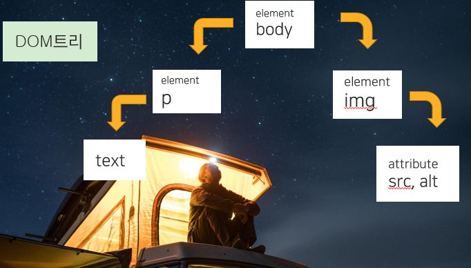

속성 값이 있는 노드 추가하기.
img태그 뿐 아니라 태그 안의 속성인 src 속성도 넣어줘야 한다.
HTML태그 만들 때는 관련된 속성 노드도 함께 만들어서
자식 노드로 연결해야 한다.
1. img태그 요소 노드 만들기 createElement()
2. 속성 노드 만들기 createAttribute()
3. 속성 노드 연결하기 setAttributeNode()
4. 자식 노드 연결하기 appendChild()
